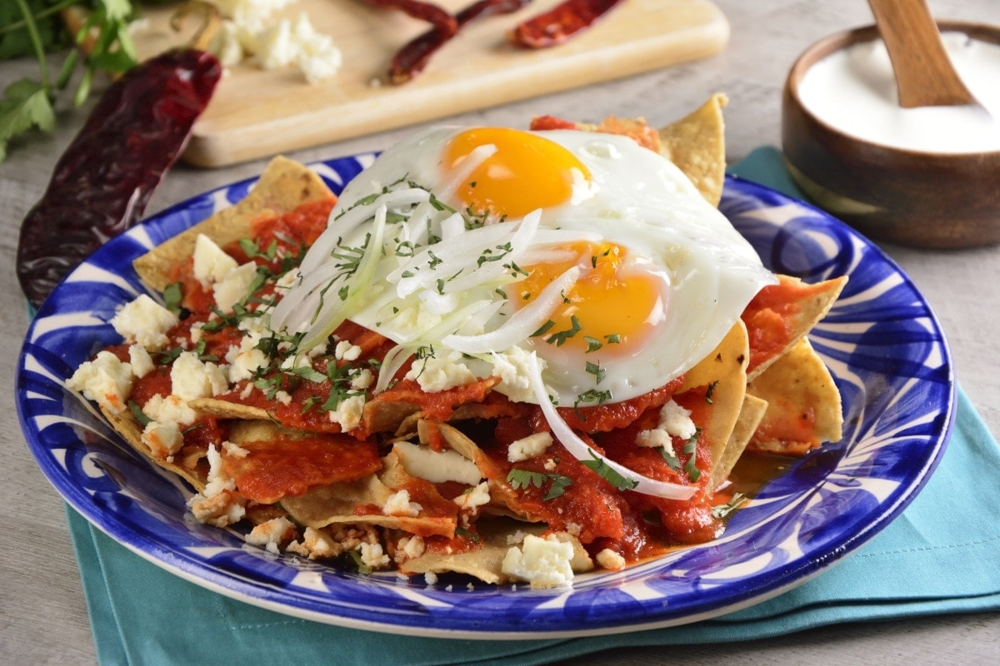

Pozole Rojo
Ingredientes
5 Litros de agua,
1/2 Cebolla cortada a la mitad,
4 Dientes de ajo,
3 Cucharadas de sal,
1 1/2 Kilos de maíz pozolero,
1/2 Kilo de costilla de cerdo cortadas en trozos,
1 Kilo de pulpa de cerdo cortada en trozos,
5 Hojas de laurel,
14 Chiles guajillo sin semillas y remojados en agua caliente,
2 Chiles ancho sin semillas y remojados en agua caliente,
2 Tazas de agua,
1/4 De pieza de cebolla cortada en trozos,
2 Dientes de ajo,
1 Cucharadita de comino,
1 Cucharadita de pimienta negra molida y para acompañar:
Orégano seco,
Chile de árbol en polvo,
Cebolla picada finamente,
Lechuga romana fileteada,
Rábanos cortados en rodajas,
Limones,
Tostadas de maíz.

Pozole Blanco
Ingredientes
5 Litros de agua,
1 Cebolla cortada a la mitad,
4 Dientes de ajo,
3 Cucharadas de sal,
1 Kilogramo de maíz pozolero precocido,
1 Kilogramo de falda de cerdo cortada en trozos,
600 Gramos de espinazo de cerdo cortado en trozo,
5 Hojas de laurel y para acompañar:
4 Tazas de lechuga romana desinfectada y fileteada
Aguacates cortados en rebanadas
1 Taza de rábanos cortados en rodajas delgadas
Chicharrón de cerdo troceado
Orégano seco
Cebolla morada picada finamente
Chiles serrano cortados en rodajas
Limones
Tostadas de maíz.

Mole
Ingredientes
4 Jitomates asados,
1/4 Cebolla asada,
3 Chiles guajillo remojados en agua caliente,
1/4 Cucharadita de Comino,
1/4 Cucharadita de Canela molida,
1 Taza de Nuez caramelizada,
1/2 Taza de Ciruelas pasas sin semillas,
2 Tazas de Agua,
2 Cucharadas de Consomé de pollo en polvo,
2 Barras de Chocolate para mesa ABUELITA® troceado,
4 Piezas de Pollo cocidas.

Carnitas
Ingredientes
½ kilo de costilla de cerdo,
½ Kilo de cabeza de lomo,
½ Kilo de espaldilla de cerdo,
½ Kilo de cuerito de cerdo,
1 1/2 Cucharada de sal,
1 1/4 Kilogramos de manteca de cerdo,
5 Dientes de ajo,
1 Cebolla cortada a la mitad,
7 Hojas de laurel,
4 Ramas de tomillo seco,
1 Cáscara de naranja,
1 Taza de jugo de naranja, y para acompañar:3/4 De taza de refresco de cola
12 Tortillas de maíz calientes
1 Taza de cilantro desinfectado y picado finamente
1 Cebolla picada finamente
12 Limones cortados a la mitad.

Tacos Mexicanos
Ingredientes
Chiles Guajillo,
Pasta de achiote,
Jugo de piña ,
Vinagre blanco,
Dientes de ajo,
Orégano mexicano,
Comino molido,
Pimienta negra,
Clavos,
SalPulpa de cerdo cortado en filetes,
Sal y pimienta para sazonar la carne,
Cebolla blanca de tamaño medio,
Lata de piña,
Cilantro,
Tortillas de maiz,
Cebolla mediana,
Salsa picante de su elección.
Tlayudas
Ingredientes
1 cebolla blanca,
1 jitomate grande,
2 tortillas para tlayudas,
1/8 de repollo blanco fresco,
1 pieza de carne de res para cada tlayuda que puede ser tasajo o cecina,
1 trozo de chorizo fresco para cada tlayuda,
1 aguacate,
1/2 limón,
50 gr de queso Oaxaca para cada tlayuda,
Asientos de cerdo o manteca,
100 gramos de frijoles refritos.

Chiles Rellenos
Ingredientes
4 piezas de chile poblano asados, sin semillas y limpios,
400 gramos de queso panela en trozos,
5 cucharadas de Fécula de Maíz Regular Maizena®,
3 clara de huevo,
3 yemas de huevo,
1/2 taza de aceite,
3 jitomates en cuartos,
1/4 de cebolla en trozos,
1 diente de ajo,
1/4 de taza de agua,
2 cucharadas de Knorr® Caldo de Pollo.
Enchiladas
Ingredientes
Chiles guajillo,
Chile ancho ,
Dientes de ajo,
Orégano seco,
Sal y pimienta,
Tortillas de maiz,
Carne deshebrada de cerdo o pollo,
Queso fresco,
Cebolla blanca,
Aceite vegetal.
Opcional:
Papas precocidas
Zanahorias precocidas
Lechuga o repollo
Rábanos.

Chilaquiles Rojos
Ingredientes
3 jitomates guaje,
6 chiles guajillo limpios, semillas o venas,
2 dientes de ajo,
1/4 de cebolla,
1 cucharada de aceite,
2 ramas de epazote,
Sal al gusto,
Para los chilaquiles:
4 huevos,
150 ml de aceite,
400 g de totopos para chilaquiles,
200 ml de crema ácida,
250 g de queso fresco desmoronado,
1/2 cebolla fileteada,
2 tazas de frijoles negros refritos.
Enfrijoladas
Ingredientes
12 tortillas,
1/2 tazas de aceite para freír las tortillas,
3 tazas de fríjol de olla con caldo,
2 dientes de ajo asados y pelados,
1/4 cebollas,
2 chiles de árbol secos fritos,
1/2 pechugas de pollo cocida y desmenuzada,
2 chorizos frito y cortado en rodajas,
150 mililitros de crema,
1/4 manojos de cilantro fresco solo las hojas,
2 chiles de árbol secos fritos.
Frijoles Puercos
Ingredientes
80 g de queso oaxaca en trozos,
55 g de cebolla en trozos,
1 diente de ajo pelado,
2 chiles serranos sin tallo,
80 g de chorizo en trozos,
100 g de tocino ahumado en trozos,
400 g de frijoles bayos cocidos,
100 g de caldo de pollo,
½ cucharadita de sal fina.
Tamales rojos con res
Ingredientes
2 kilos de res, paleta o espaldilla de res sin hueso,
3 paquetes de maíz, hojas de maíz secas,
4 chiles anchos secos,
2 cucharadas de aceite vegetal,
2 cucharadas de harina,
1 taza de caldo de res,
1 cucharadita de semilla de comino,
2 dientes de ajo, picados,
2 cucharaditas de orégano fresco picado,
1 cucharadita de chile en polvo,
1 cucharadita de vinagre blanco,
3 tazas de manteca,
1 cucharada de sal o al gusto de sal,
9 tazas de harina de maíz.
{kind=link}


{kind=link}

{kind=link}
{kind=link}
{kind=link}
{kind=link}
{kind=link}